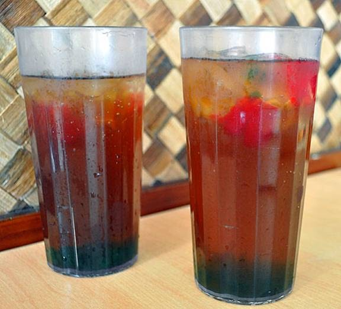

Sago't Gulaman Recipe

Video Tutorial: Sago't Gulaman Recipe Video
Sago't Gulaman is a popular Filipino drink made with tapioca pearls (sago) and jelly (gulaman) served in a sweet brown sugar syrup. Here's how to make it:
Ingredients:
- 1/2 cup uncooked tapioca pearls (sago)
- 1 pack gulaman powder (clear or any flavor of your choice)
- 6 cups water, divided
- 1 cup brown sugar
- Ice cubes, for serving
Instructions:
- Prepare the tapioca pearls (sago) according to package instructions. Cook until translucent and drain. Set aside.
- Prepare the gulaman according to package instructions. Allow it to cool and set, then cut into cubes. Set aside.
- In a saucepan, combine brown sugar and 1 cup of water. Bring to a boil, stirring until the sugar is completely dissolved. Remove from heat and let it cool.
- To assemble, place some tapioca pearls (sago) and gulaman cubes in a glass.
- Pour the brown sugar syrup over the pearls and cubes.
- Add ice cubes and stir to combine.
- Serve immediately and enjoy your refreshing Sago't Gulaman!